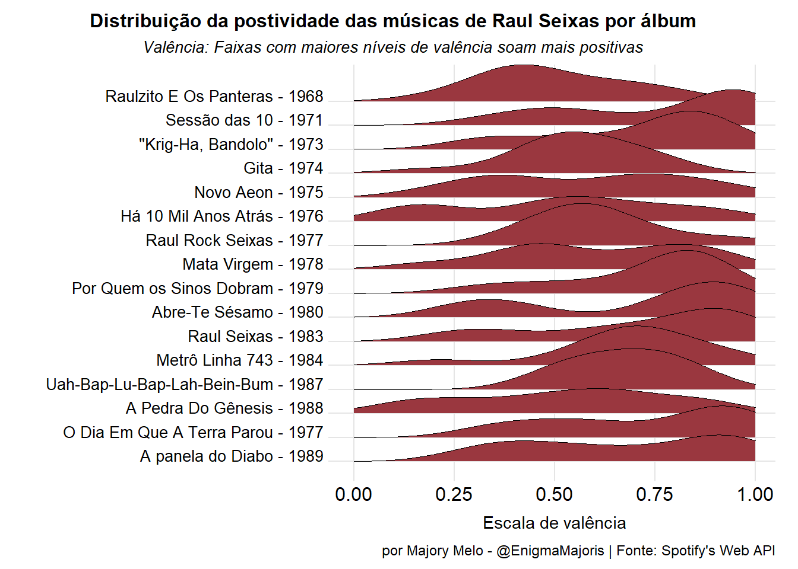
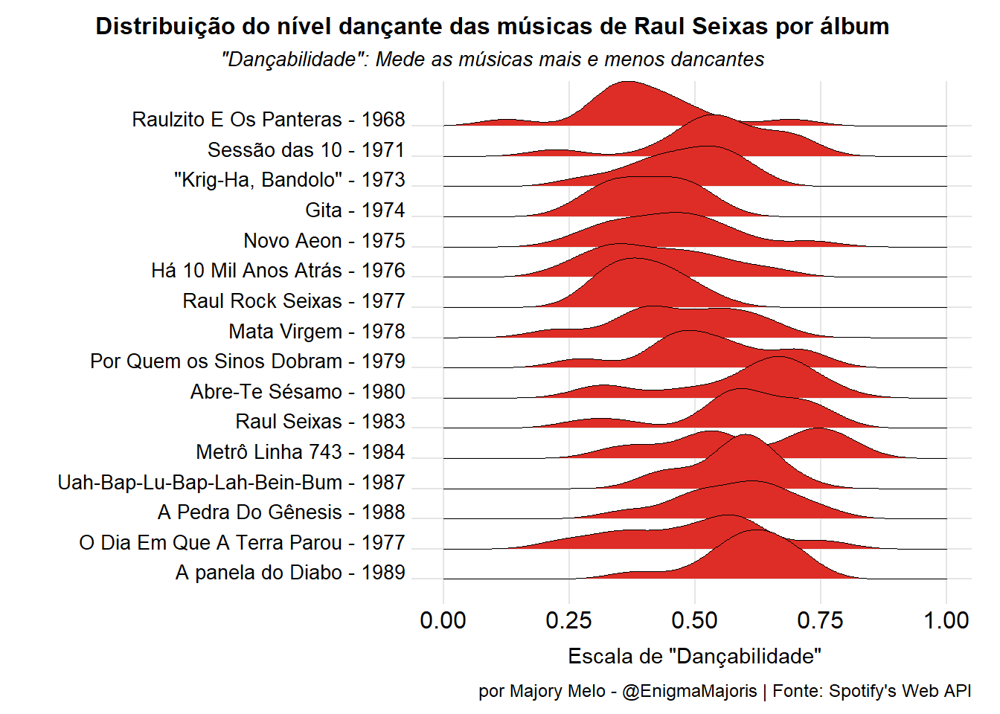
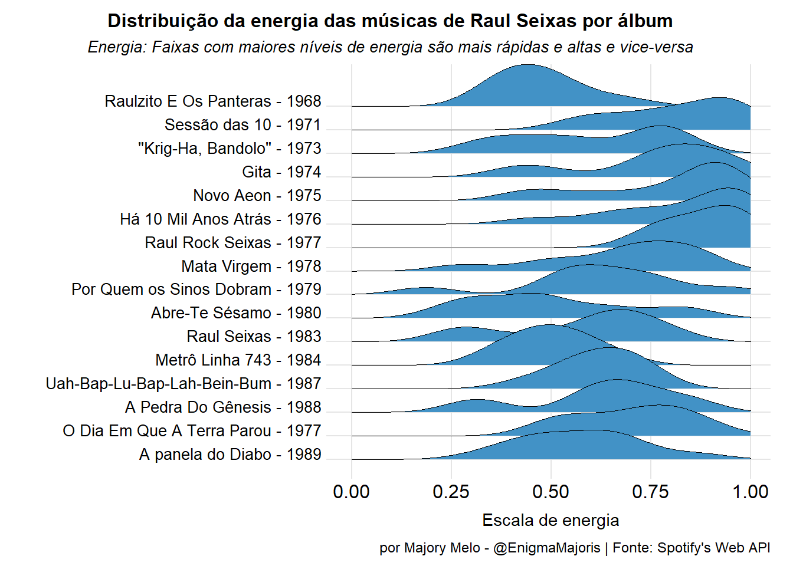
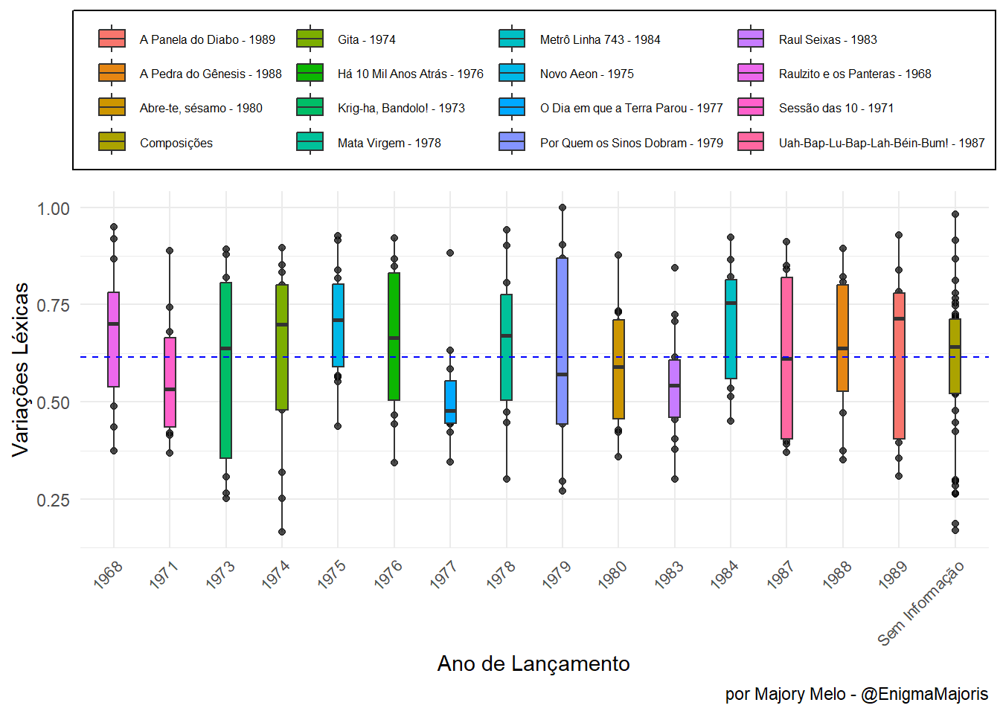
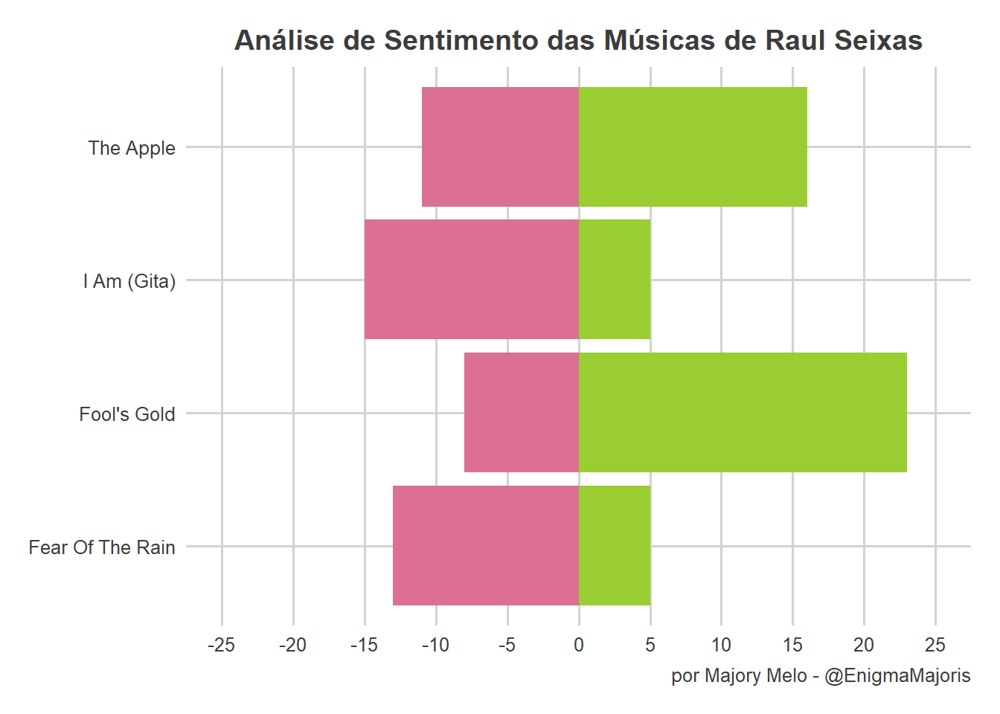
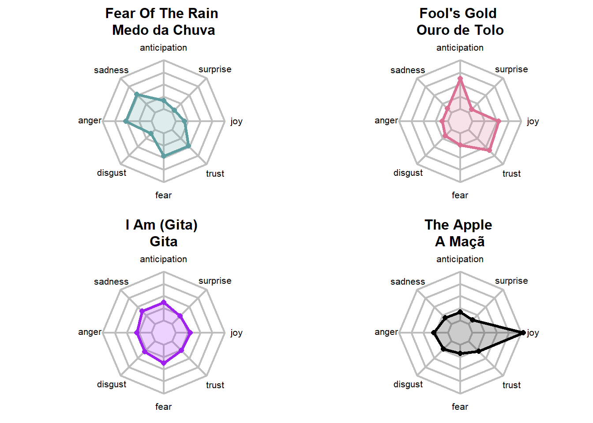

Conhecido por sua genialidade, excentricidade, poesia, música e inovação, Raul tinha o sonho de se tornar escritor ou cantor, mas foi muito mais; unindo essas duas formas de expressão artística se tornou a figura mais importante na história do rock nacional, um indivíduo questionador, místico e irônico, sempre buscando compreender o mundo além do material.
Durante um período de intensa repressão política, Raul criou, compôs e se contrapôs. E em resposta, recebeu censuras, prisão e exílio.
Quantas visões e curiosidades permeiam o Universo Raul Seixas?
Nesta humilde homenagem, vamos reunir um pouco delas por meio da análise e visualização de dados contidos em sua obra.
Aviso
Este artigo contém altas doses de referências musicais.
Quer conhecer mais sobre a obra de Raulzito? Então, dá um play e…Toca Rauul!🎸
1 Eu sou o início
Eu nasci há dez mil anos atrás
"Eu li os simbolos sagrados de Umbanda / Eu fui criança pra poder dançar ciranda / E, quando todos praguejavam contra o frio / Eu fiz a cama na varanda"
Raul Santos Seixas, nasceu em Salvador/BA no dia 28 de junho de 1945. Filho de um engenheiro e de uma dona de casa. Tem um irmão que é três anos mais novo.
Odiava a escola mas adorava ler, queria ser escritor assim como Jorge Amado, seu conterrâneo.
Na adolescência, se aproximou da música, mais precisamente do gênero rock e chegou a fundar até um clube, o Elvis Rock Club. Nesse período, conhece os membros de sua futura banda, Relâmpagos do Rock, que mais tarde trocariam o nome para The Panters até chegar em Raulzito e Os Panteras
Com a banda formada e o nome definido, recebem o convite para mudarem para o Rio de Janeiro com a proposta de gravarem um álbum e dar início, oficialmente, à carreira musical.
Ouro de tolo
"Eu devia estar alegre e satisfeito / ... / Depois de ter passado fome por dois anos / Aqui na Cidade Maravilhosa"
Mas como nem tudo que reluz é ouro, a vida na Cidade Maravilhosa não foi fácil, o álbum veio, mas a dificuldade em torná-lo popular culminou no término da banda e no regresso dos integrantes à Bahia.
Tente outra vez
"Veja / Não diga que a canção está perdida / Tenha fé em Deus, tenha fé na vida / Tente outra vez"
De volta a Salvador, Raul se tranca no quarto e mergulha de vez nos livros de filosofia e misticismo. Até que o diretor da CBS Discos, um conhecido dos tempos da banda, faz uma proposta para que ele assumir o cargo de produtor musical da gravadora e, assim, Raul retorna mais uma vez ao Rio de Janeiro.
O estilo de vida e as canções inspiradas na Lei da Thelema proposta pelo inglês Aleister Crowley fez com que a dupla fosse persseguida pelo D.O.P.S - Departamento de Ordem Política e Social, resultando em músicas censuradas, prisão e exílio por um ano, nos Estados Unidos.
Durante o exílio, o álbum Gita é lançado e se torna um grande sucesso, permitindo o retorno dos artistas ao país.
2 O fim
Movido à álcool
"Por que que o posto anda comprando tanta cana / Se o estoque do boteco já está pra terminar? / Derramar cachaça em automóvel / É a coisa mais sem graça / De que eu já ouvi falar / Por que cortar assim nossa alegria?
"Titia que morava na Argentina voltou / Riu de mim porque eu não entendi / Me trouxe uma caixa de perfume ê ê / Daquele que não tem mais por aqui / Eu disse não não não não / Não brinco mais carnaval / Cansei de desmaiar no salão / Muito obrigado eu já andei perfumado / Não quero mais andar na contra-mão"
Os anos 80 para o nosso Canceriano Sem Lar foi marcado por entradas e saídas de clínicas de reabilitação; trocas de gravadoras; shows e discos com poucas vendas e, por idas e vindas de relacionamentos.
Oficialmente ele teve cinco relacionamentos entre casamentos e união estável, destes relacionamentos ele teve três filhas, uma com cada esposa diferente.
Foi durante uma participação num disco da banda Camisa de Vênus que nasce a parceria com o também baiano Marcelo Nova
Quando eu morri
"Quando eu morri suando frio / Vi Jimi Hendrix tocando nuvens distorcidas"
Desta parceria saiu uma turnê pelo Brasil com 50 shows e um albúm, A Panela Do Diabo, que foi lançado dois dias antes de Raul ser encontrado sem vida em seu apartamento em São Paulo.
Raul Santos Seixas, morreu em decorrência de pancreatite aguda, em 21 de agosto de 1989.
3 E o meio
A principal motivação desse trabalho é reforçar o conhecimento e colocar em prática os conceitos abordados nas disciplinas do cursos de MBA em Data Science e Analytics da USP/ESALQ.
De uma forma despojada, vamos aplicar as etapas da ciência de dados, representada na figura abaixo, sobre a discografia do Raul Seixas.
Arte por Allison Horst - @allison_horst
O objetivo da análise de dados é extrair insights e tomar decisões com base nos dados coletados, com o uso do processo de inspecionar, limpar, transformar e modelar, envolvendo as seguintes etapas:
Definição do problema: Consiste em identificar o objetivo da análise e as perguntas a serem respondidas.
Coleta de dados: Obter os dados necessários de fontes relevantes e confiáveis.
Limpeza e pré-processamento dos dados: Examinar e tratar os dados em busca de inconsistências, dados ausentes, ou erros. Inclui etapas como remoção de valores ausentes, tratamento de outliers e padronização dos dados.
Análise exploratória: Identificar padrões, tendências e relacionamentos. Isso pode incluir a criação de visualizações, cálculos estatísticos e resumos descritivos.
Modelagem e análise avançada: Aplicar técnicas de estatísticas, algoritmos de aprendizado de máquina ou outras abordagens para extrair insights dos dados e responder às perguntas de análise definidas anteriormente.
Interpretação e comunicação dos resultados: Interpretar os resultados obtidos da análise, tirar conclusões relevantes e comunicar as percepções de maneira clara e acessível, por meio de relatórios, visualizações ou apresentações.
Antes de dar início a nossa análise dos dados é preciso:
Carregar pacotes
Código
library(tidyverse)library(spotifyr)library(highcharter)library(stringr)library(ggridges)library(ggthemes)library(DT)library(httr)library(rvest)library(stopwords)library(wordcloud2)library(tm)library(tidytext)library(textdata)library(fmsb)library(radarchart) #Plotar gráfico teialibrary(plotly)# Plotar gráfico de teialibrary(scales) # Ajustar o gráfico teialibrary(widyr) #to find correlations between songslibrary(ggraph) #plotting network mapslibrary(igraph) #plotar network mapslibrary(knitr)
Mas para que servem esses pacotes?
O pacote Tidyverse é considerado o pacote base do R, ao carregarmos ele estamos carregando também outros pacotes como:
{readr} importa bases de dados para o R;
{tidyr} e {dplyr} manipula dados;
{stringr} trabalha com textos;
{ggplot2} trabalha com gráficos.
O pacote ggridges serve de extensão ao pacote ggplot2 para compararmos a distribuição de uma variável X em vários níveis de uma variável Y. Já o pacote highcharter cria gráficos interativos, enquanto que o pacote DT cria tabelas interativas, permitindo paginação e pesquisar as informações nelas contidas. As bibliotecas httr e rvestsão usadas principalmente para interagir com APIs da web e realizar operações de web scraping, respectivamente.
E por último, mas não menos importante, temos o pacote spotifyr que permite obter e realizar alguns entendimentos sobre os dados mantidos pelo Spotify, com algumas das funções abordadas ao longo deste trabalho.
Configurar as APIs do Spotify e Criar Repositório de Músicas
O primeiro passo é obter os IDs da sua conta do Spotify. Não tem ideia de como fazer isso? Então, siga esse tutorial Acessando a API do Spotify.
De posse dos IDs, é preciso executar o código abaixo para termos acessos aos dados sobre as músicas do nosso Cowboy Fora da Lei, usando a função get_artist_audio_features.
Como este artigo foi elaborado de forma que possa ser reproduzido para que qualquer pessoa possa reproduzir com exatidão todos os resultados demonstrados, optei por salvar a base de dados para evitar que ocorra várias chamadas às APIs; por esta razão, o código está inibido.
Sys.setenv(SPOTIFY_CLIENT_ID ="Seu Client ID")Sys.setenv(SPOTIFY_CLIENT_SECRET ="Seu Client Secret")raul1 <-get_artist_audio_features("raul seixas")write_csv(raul1, "dados/raul1.csv")raul2 <-get_artist_audio_features("raulzito e os panteras")write_csv(raul2, "dados/raul2.csv")raul3 <-get_artist_audio_features("sociedade da gra-ordem kavernista")raul <-rbind(raul1, raul2, raul3)write_csv(raul, "dados/raul.csv")
Criar Repositório de Letras de Música
As letras serão obtidas na página dedicada ao Raul mantida pelo site Letras
O código abaixo demonstra a “raspagem” que será feita na página, utilizando as bibliotecas httr e rvest. Em outras palavras, o algoritmo encontrará o link para cada música na página de Raul Seixas e a letra correspondente a cada canção. Em seguida, será criada uma tabela com as colunas “nome” (nome da música) e “verso”, onde cada linha da tabela corresponde a um verso de cada música coletada.
No final, é gerado um arquivo CSV que será o nosso repositório de dados.
Assim, como ocorreu anteriormente, para evitar a realização de várias chamadas a url, o código também foi desabilitado nesta etapa.
#A url utilizada será a da página da Raul no site:url <-"https://www.letras.mus.br/raul-seixas/"# Realizar a requisição HTTP para obter o HTML da páginaresponse <-read_html(url)# Encontra todos os links das músicaslinks <- response |>html_nodes('a.song-name')# Criar um data frame vazio com as colunas 'nome' e 'verso'letras <-data.frame(nome =character(), verso =character(), stringsAsFactors =FALSE)for (link in links) { song_url <- link |>html_attr('href') song_url2 <-paste0("https://www.letras.mus.br", song_url) song_title <- link |>html_text() |>str_trim() song_response <-read_html(song_url2) lyrics_div <- song_response |>html_nodes('div.cnt-letra')if (length(lyrics_div) >0) {# Extrair cada verso da letra e adicionar como uma nova linha no data frame verses <- lyrics_div |>html_text() |>str_split('\n') |>unlist() |>str_trim() |>na.omit() data <-data.frame(nome =rep(song_title, length(verses)), verso = verses, stringsAsFactors =FALSE) letras <-bind_rows(letras, data) } else {cat(sprintf("Não foi possível encontrar a letra da música '%s'.\n", song_title)) }}# Salva o data frame em um arquivo CSVwrite.csv(letras, file ='dados/letras.csv', row.names =FALSE)
Agora, que já realizamos a importação dos dados, vamos iniciar a análise da obra do nosso artista Maluco Beleza. Para isso, vamos dividí-la em duas partes:
Análise das Músicas
Análise das Letras
3.2.1 Análise das Músicas
Cantar
"Eu já falei sobre disco voador / E da metamorfose que eu sou / Eu já falei só por falar / Agora eu vou cantar por cantar /... / Cantar tudo o que vier na cabeça / Eu vou cantar até que o dia amanheça"
Aqui já conseguimos ver que o dataframe tem 39 colunas e 529 linhas, que correspondem a cada faixa de música. Há uma coluna com o formato errado, a album_release_date (Data de Lançamento do Álbum), que ora apresenta o formato ano-mês-dia, ora apenas o ano. Como não faremos uso desse atributo, não iremos ajustá-lo.
Para descobrir quantas faixas cada álbum tem, vou utilizar o “GSA” (as funções group_by, summarise e arrange do pacote dplyr):
Ao longo dos 26 anos de carreira, Raul Seixas lançou 17 álbuns.
Nesta extração, observa-se que há 35 álbuns relacionados, logo, conclui-se que nela além dos álbuns de estudio, constam também álbuns de coletânias e audio-livros, como é o caso do audio-livro “Baú do Raul”, que segundo a amostragem é tido o álbum com maior número de faixas, 68 faixas.
Para as análises deste trabalho, iremos considerar apenas os álbuns da discografia em estúdio, e dos 17 álbuns, iremos considerar apenas 16, pois o álbum Os 24 Maiores Sucessos da Era do Rock, lançado em 1973 só foi creditado ao Raul Seixas em 1975, por sua participação na produção e também como cantor na maioria das faixas.
Feita as explicações, vamos criar um novo objetoalbum_raul, ordenando-o pelo o ano de lançamento dos discos.
Código
album_raul <- raul |>filter(album_name %in%c("Raulzito E Os Panteras", "Sessão das 10", "\"Krig-Ha, Bandolo\"", "Gita", "Novo Aeon", "Há 10 Mil Anos Atrás", "Raul Rock Seixas", "O Dia Em Que A Terra Parou", "Mata Virgem", "Por Quem os Sinos Dobram", "Abre-Te Sésamo", "Raul Seixas", "Metrô Linha 743", "Uah-Bap-Lu-Bap-Lah-Bein-Bum", "A Pedra Do Gênesis", "A panela do Diabo")) |>arrange(album_release_year)
Considerando o novo objeto voltemos a pergunta: Quantas faixas cada álbum tem?
Tanto o álbum Gita quanto o álbum Novo Aeon possuem 14 faixas, cada, mas será que por serem os álbuns com mais faixas, eles são os mais longos? Para responder essa pergunta, usaremos a função duration_ms do pacote spotifyr.
Contudo identifiquei que os álbuns A Panela do Diabo e O Dia Em Que A Terra Parou estão com a data de lançamento posterior a morte de Raul, 1989. Isso ocorreu porque estes ábuns foram relançados nas datas indicadas na tabels.
Com as funções mutate() e replace() do pacote dplyr vamos ajustar essas datas para as datas do primeiro lançamento,1989 e 1977, respectivamente, conforme declarado na Discografia de Raul Seixas na Wikipedia e, vamos aproveitar e inserir uma nova coluna, album, em nosso banco de dados que demonstre o nome do album, juntamente com a respectiva data de seu lançamento:
Código
album_raul <- album_raul |>mutate(album_release_year =replace(album_release_year, album_name =="A panela do Diabo", 1989),album_release_year =replace(album_release_year, album_name =="O Dia Em Que A Terra Parou", 1977),album =paste(album_name, "-", album_release_year) )album_raul |>group_by(album_name, album_release_year, album) |>summarise(duracao =sum(duration_ms)) |>arrange(desc(duracao)) |>datatable(extensions =c("FixedColumns", "FixedHeader"),options =list(theme ="darkly",scrollX =FALSE,paging =TRUE,fixedHeader =TRUE ),caption ="Duração de cada álbum do Raul Seixas, em milissegundos" )
Verifuca-se que a A Panela do Diabo é o álbum mais longo da discografia de Raul, seguido do álbum Gita.
Ainda analizando o nosso banco de dados album_raul, outra informação que poderemos extrair são os acordes.
Abaixo estão os três acordes mais utilizados nas músicas de Raul.
Código
album_raul |>count(key_mode, sort =TRUE) |>head(3) |>datatable(caption ="Acordes mais utilizados" )
3.2.1.2 Sentimentos
Além de informações objetivas, como: quantidade de faixas, acordes e duração de cada álbum, o pacote spotifyr permite analisar o sentimento das músicas.
E uma das melhores forma de fazer isso, na minha opinião, é por meio da valência definida pelo SpotifyDevelopers (2023) como:
“Uma medida de 0,0 a 1,0 que descreve a positividade musical transmitida por uma faixa. Faixas com alta valência soam mais positivas (por exemplo,alegre, eufórica, feliz), enquanto faixas com baixa valência soam mais negativas (por exemplo, triste, deprimido, zangado).”
O gráfico abaixo demonstra uma visão geral da valência por álbum:
Código
album_raul |>arrange(album_release_year) |>mutate(album =factor(album, levels =rev(unique( album_raul$album )))) |>ggplot(aes(x = valence, y = album, fill = album)) +geom_density_ridges(from =0,to =1,alpha =1,size =0.1 ) +labs(x ="Escala de valência",y ="",title ="Distribuição da postividade das músicas de Raul Seixas por álbum",subtitle ="Valência: Faixas com maiores níveis de valência soam mais positivas",caption ="por Majory Melo - @EnigmaMajoris | Fonte: Spotify's Web API" ) +scale_fill_cyclical(values =c("#9A373F")) +theme_ridges() +theme(plot.title =element_text(hjust =0.5,size =12,color ="#000000",face ="bold",family ="Bitter" ),plot.title.position ="plot",plot.subtitle =element_text(face ="italic",hjust =0.5,size =10,family ="Bitter" ),axis.text.y =element_text(size =10, family ="Raleway"),axis.title.x =element_text(hjust =0.5,size =11,family ="Raleway" ),plot.caption =element_text(size =9, family ="Bitter") )

O gráfico mostra “uma onda” por álbum. Os picos são os valores com mais faixas naquele ponto da escala de valência.
Analisando o gráfico, percebemos que os álbuns Sessão das 10, Abre-Te Sésamo e Raul Seixas, são os mais positivos.
Agora, para sabermos o álbum mais positivo, vamos utilizar a mediana da valência de cada álbum.
Segundo Fávero e Belfiore (2017), “a mediana é uma medida de localização do centro da distribuição de um conjunto de dados ordenados de forma crescente. Seu valor separa a série em duas partes iguais, de modo que 50% dos elementos são menores ou iguais à mediana e os outros 50% são maiores ou iguais à mediana.”
Escolhemos a mediana quando temos dados com valores extremos ou assimetria na distribuição, como demontra o gráfico anterior, pois ela não é influenciada por valores extremos, ao contrário, da média aritmética.
Código
album_raul |>group_by(album) |>summarise_at(vars(valence), list(mediana =~round(median(., na.rm =TRUE), 3))) |>arrange(desc(mediana)) |>datatable(extensions =c("FixedColumns", "FixedHeader"),options =list(scrollX =FALSE,paging =TRUE,fixedHeader =TRUE,class = (c("compact", "row-border", "hover", "nowrap" )) ),caption ="Mediana da valência de cada álbum da Raul Seixas" )
Não é de se surpreender que o álbum Sessão das 10 seja o mais positivo, afinal como escreveu o jornalista e músico Nova (2021) “Um disco nonsense, poderíamos resumir (…) O álbum encerra com um sugestivo som de descarga numa privada. No meio disso tudo, chorinho, baião, seresta, xaxado, calypso, rock, samba e o que mais desse na veneta (…) Nem os tropicalistas ousaram tanta galhofa num único disco.”
Para finalizarmos nossa análise sobre a valência, vamos avaliar qual a música mais positiva e qual a menos positiva de toda coletânia de Raul.
Código
# Mais positivaalbum_raul$track_name[which.max(album_raul$valence)]
[1] "Aos Trancos e Barrancos"
A música mais positiva é, Aos Trancos e Barrancos, que pertence ao álbum considerado o mais positivo, Sessão das 10.
Código
# Menos positivaalbum_raul$track_name[which.min(album_raul$valence)]
[1] "Cantiga De Ninar"
Enquanto que Cantiga de Ninar do álbum Há 10 Mil Anos Atrás, é a menos positiva das 179 músicas contidas na análise. O que até faz sentido, pois se tratando de uma canção de ninar o ritmo é mais lento e o tom mais baixo.
O atributo speechiness (fala) detecta a presença de palavras faladas em uma faixa musical enquanto que o instrumentalness (instrumentalidade) prevê se uma faixa não contém vocais.
De acordo com o Spotify Developers (2023), “Quanto mais exclusivamente falado for o registro (por exemplo, programa de entrevista, audiolivro, poesia), mais próximo de 1.0 será o valor do atributofala. Já nainstrumentalidade, sons de“Ooh”e“Aah”são tratados como instrumentais nesse contexto. Quanto mais próximo o valor de instrumentalidade for de 1.0, maior a probabilidade de a faixa não conter conteúdo vocal. Valores acima de 0.5 pretendem representar faixas instrumentais, mas a confiança é maior à medida que o valor se aproxima de 1.0”.
Em nossa análise, a música Caminhos se apresenta com o maior speechiness.
Código
# Mais faladaalbum_raul$track_name[which.max(album_raul$speechiness)]
[1] "Caminhos"
Confesso que não esperava que ela fosse tida como a mais falada, pois quando li a descrição de speechiness a primeira música que me veio à mente foi Canto Para Minha Morte
Comparando as duas músicas, percebemos que elas estão bem distantes no ranking das músicas com mais falas. A música que considero a mais falada ocupa a posição 98ª de um ranking de 179 músicas e, acredito que a variável duration_ms tenha alguma relação sobre a variável speechiness. Caminhos tem em torno de 01m48s enquanto que Canto Para Minha Morte possui 03m50, mas que o dobro da primeira colocada. Porém, como a documentação não traz muitos detalhes sobre os atributos, fica inviável fazer qualquer afirmação.
Código
# Criar uma coluna com o Rank de músicas mais faladasrank_fala <- album_raul |>mutate(posicao =rank(-speechiness))# Criar tabela com a relação das músicas selecionadasrank_fala |>arrange(desc(speechiness)) |>filter(track_name %in%c("Caminhos", "Canto Para Minha Morte")) |>select(track_name, posicao) |>datatable(extensions =c("FixedColumns", "FixedHeader"),options =list(scrollX =FALSE,paging =TRUE,fixedHeader =TRUE,class =c("compact", "row-border", "hover", "nowrap") ),caption ="Músicas com mais falas")
Já a música Requien para uma flor possui o valor mais alto para o indicador instrumentalness.
Código
# Mais instrumentalalbum_raul$track_name[which.max(album_raul$instrumentalness)]
[1] "Requien para uma flor"
Ao ouvirmos a canção, dá para notar que entre um verso e outro, há uma tempo razoável de som instrumental. Então, pra mim, faz sentido ela ser apontada como sendo a música com menos conteúdo vocal.
Dando continuidade, o próximo atributo a ser analizado é danceability, que descreve o quão adequada uma faixa é para dançar, com base em uma combinação de elementos musicais incluindo tempo, estabilidade rítmica, força do beat e regularidade geral. Um valor de 0 é o menos dançante e 1 é o mais dançante.
Desse modo, vemos que a faixa que tem o valor máximo de “danceabilidade” é O Trem das Sete
album_raul |>arrange(album_release_year) |>mutate(album =factor(album, levels =rev(unique( album_raul$album )))) |>ggplot(aes(x = danceability, y = album, fill = album)) +geom_density_ridges(from =0,to =1,alpha =1,size =0.1 ) +labs(x ="Escala de \"Dançabilidade\"",y ="",title ="Distribuição do nível dançante das músicas de Raul Seixas por álbum",subtitle ="\"Dançabilidade\": Mede as músicas mais e menos dancantes",caption ="por Majory Melo - @EnigmaMajoris | Fonte: Spotify's Web API" ) +scale_fill_cyclical(values =c("#de2d26")) +theme_ridges() +theme(plot.title =element_text(hjust =0.5,size =12,color ="#000000",face ="bold",family ="Bitter" ),plot.title.position ="plot",plot.subtitle =element_text(face ="italic",hjust =0.5,size =10,family ="Bitter" ),axis.text.y =element_text(size =10, family ="Raleway"),axis.title.x =element_text(hjust =0.5,size =11,family ="Raleway" ),plot.caption =element_text(size =9, family ="Bitter") )

Código
album_raul |>group_by(album) |>summarise_at(vars(danceability), list(mediana =~round(median(., na.rm =TRUE), 3))) |>arrange(desc(mediana)) |>datatable(extensions =c("FixedColumns", "FixedHeader"),options =list(scrollX =FALSE,paging =TRUE,fixedHeader =TRUE,class = (c("compact", "row-border", "hover", "nowrap" )) ),caption ="Mediana da danceability de cada álbum da Raul Seixas" )
Vimos que a canção mais dançante, O Trem das Sete pertence ao álbum Gita, no entanto, é o álbum Abre-Te Sésamo que é o mais dançante, enquanto que o álbum Raulzito e Os Panteras aparece na última posição.
Vamos analisar a energy (energia) das músicas do Raul Rock Seixas. Diferentemente da energia cósmica que ele tanto fala, esse atributo é descrito como “uma escala de 0 a 1 e representa uma medida de intensidade e atividade. Normalmente, as faixas energéticas parecem rápidas, altas e barulhentas”. Isso significa que uma faixa bem pesada, como um death metal, teria alta energia, enquanto uma baladinha suave pontua baixo na escala.
Assim, constatamos que Soul Tabaroa é a música mais energética da coletânia em estúdio.
album_raul |>arrange(album_release_year) |>mutate(album =factor(album, levels =rev(unique( album_raul$album )))) |>ggplot(aes(x = energy, y = album, fill = album)) +geom_density_ridges(from =0,to =1,alpha =1,size =0.1 ) +labs(x ="Escala de energia",y ="",title ="Distribuição da energia das músicas de Raul Seixas por álbum",subtitle ="Energia: Faixas com maiores níveis de energia são mais rápidas e altas e vice-versa",caption ="por Majory Melo - @EnigmaMajoris | Fonte: Spotify's Web API" ) +scale_fill_cyclical(values =c("#4292c6")) +theme_ridges() +theme(plot.title =element_text(hjust =0.5,size =12,color ="#000000",face ="bold",family ="Bitter" ),plot.title.position ="plot",plot.subtitle =element_text(face ="italic",hjust =0.5,size =10,family ="Bitter" ),axis.text.y =element_text(size =10, family ="Raleway"),axis.title.x =element_text(hjust =0.5,size =11,family ="Raleway" ),plot.caption =element_text(size =9, family ="Bitter") )

Código
album_raul |>group_by(album) |>summarise_at(vars(energy), list(mediana =~round(median(., na.rm =TRUE), 3))) |>arrange(desc(mediana)) |>datatable(extensions =c("FixedColumns", "FixedHeader"),options =list(scrollX =FALSE,paging =TRUE,fixedHeader =TRUE,class = (c("compact", "row-border", "hover", "nowrap" )) ),caption ="Mediana da energia de cada álbum da Raul Seixas" )
Mesmo o álbum Sessão das 10 tendo a música mais energizante das paradas, ele ocupa a 4º posição no ranking.
Sabemos a partir da análise da mediana da energia que os álbuns lançados no período entre 1975 e 1977 são os mais energizantes.
3.2.2 Análise das Letras
Para Nóia
"Se eu vejo um papel qualquer no chão / Tremo, corro e apanho pra esconder / Com medo de ter sido uma anotação que eu fiz / Que não se possa ler / E eu gosto de escrever, mas..."
Rows: 251
Columns: 2
$ nome <chr> "À Beira do Pantanal", "A Geração da Luz", "A Hora do Trem Passa…
$ verso <chr> "Foi lá na beira do PantanalSeu corpo tão belo enterreiFoi lá qu…
O objeto que geramos na etapa do Prelúdio (3.1), se mostrou inaquado. Para darmos início a nossa análise de texto será preciso ajustá-lo, de modo que cada linha de verso corresponda a uma linha do arquivo e que o arquivo contenha o nome do albúm e o ano de seu lançamento.
Código
head(letras)
# A tibble: 6 × 2
nome verso
<chr> <chr>
1 À Beira do Pantanal "Foi lá na beira do PantanalSeu corpo tão belo enterrei…
2 A Geração da Luz "Eu já ultrapassei a barreira do somFiz o que pude às v…
3 A Hora do Trem Passar "Você tão calada e eu com medo de falarJá não sei se é …
4 A Ilha da Fantasia "Vamos logo que já tá na hora de zarparVem sem medo que…
5 A Lei "Todo homem tem direitoDe pensar o que quiserTodo homem…
6 A Maçã "Se esse amorFicar entre nós doisVai ser tão pobre amor…
Tente outra vez
"Basta ser sincero / E desejar profundo / Você será capaz de sacudir o mundo / Vai! / Tente outra vez!"
Como não obtive êxito em ajustar o arquivo letras.csv no código R, resolvi realizar uma nova raspagem, desta vez, utilizando a linguagem Python. E agora temos um novo arquivo raul-letras.csv, gerado a partir do código abaixo, que pelas razões anteriores, encontra-se desabilitado.
import requestsfrom bs4 import BeautifulSoupimport pandas as pdurl ='https://www.letras.mus.br/raul-seixas/'# Realiza a requisição HTTP para obter o HTML da páginaresponse = requests.get(url)# Faz o parsing do HTML com o BeautifulSoupsoup = BeautifulSoup(response.text, 'html.parser')# Encontra todos os links das músicaslinks = soup.find_all('a', class_='song-name')# Cria um DataFrame vazio com as colunas 'nome' e 'verso'df = pd.DataFrame(columns=['nome', 'verso'])for link in links: song_url = link['href'] song_url2 ="https://www.letras.mus.br"+ song_url song_title = link.text.strip() song_response = requests.get(song_url2) song_soup = BeautifulSoup(song_response.text, 'html.parser') lyrics_div = song_soup.find('div', class_='cnt-letra')if lyrics_div isnotNone:# Extrai cada verso da letra e adiciona como uma nova linha no DataFrame verses =list(lyrics_div.stripped_strings) data = {'nome': [song_title] *len(verses), 'verso': verses} df = pd.concat([df, pd.DataFrame(data)], ignore_index=True)else:print(f"Não foi possível encontrar a letra da música '{song_title}'.")# Salva o DataFrame em um arquivo CSVdf.to_csv('C:/Users/major/Downloads/raul-letras.csv')
Rows: 8,582
Columns: 3
$ X <int> 0, 1, 2, 3, 4, 5, 6, 7, 8, 9, 10, 11, 12, 13, 14, 15, 16, 17, 18…
$ nome <chr> "À Beira do Pantanal", "À Beira do Pantanal", "À Beira do Pantan…
$ verso <chr> "Foi lá na beira do Pantanal", "Seu corpo tão belo enterrei", "F…
De volta à linguagem R, para analisarmos o novo repositório letras_raul, gerado a partir do arquivo raul-letras.csv, percebemos que saímos de um banco de dados com 251 observações para um com 8.582 linhas. A coluna X, refere-se a contagem das observações.
Código
head(letras_raul)
X nome verso
1 0 À Beira do Pantanal Foi lá na beira do Pantanal
2 1 À Beira do Pantanal Seu corpo tão belo enterrei
3 2 À Beira do Pantanal Foi lá que eu matei minha amada
4 3 À Beira do Pantanal Sua voz na lembrança eu guardei:
5 4 À Beira do Pantanal "Por que, meu querido
6 5 À Beira do Pantanal Por que, meu amor
Importante
Para análise das músicas, consideramos 179 canções que foram aquelas que pertencem à albuns de estúdio.
Para a análise das letras de músicas, vamos considerar também as letras de músicas que foram compostas para serem interpretadas por Raul Seixas, bem como as músicas compostas por ele próprio, mas que não necessariamente fazem parte da discografia “oficial”.
Como é o caso da música Ainda Queima a Esperança, composta por Raul Seixas e que ficou conhecida na voz de Diana
Antes de analisar o texto, é preciso fazer alguns ajustes. Vamos criar mais duas colunas album e ano para identificarmos a qual album a letra pertence e o ano de seu lançamento, isso nos ajudará na organização das visualizações e análises.
Para as letras que não estão sendo consideradas na discografia oficial vamos atribuir o nome Composições na coluna album e na coluna ano atribuiremos o valor Sem Informação. Também iremos deixar as letras em formato minúscula, na sequência faremos a remoção de algumas palavras (as stopwords) e por fim, o processo de tokenização.
Criando as colunas album e ano:
Código
letras_raul <- letras_raul %>%mutate(album =case_when( nome %in%c("Brincadeira", "Por Que, Pra Que?", "Um Minuto Mais", "Vera Verinha", "Você Ainda Pode Sonhar", "Menina de Amaralina", "Triste Mundo", "Dê-me Tua Mão", "Alice Maria", "Me Deixa Em Paz", "Trem 103", "O Dorminhoco") ~"Raulzito e os Panteras - 1968", nome %in%c("Êta Vida", "Sessão Das Dez", "Eu Vou Botar Pra Ferver", "Eu Acho Graça", "Chorinho Inconsequente", "Quero Ir", "Soul Tabaroa", "Todo Mundo Está Feliz", "Aos Trancos e Barrancos", "Eu Não Quero Dizer Nada", "Dr. Pacheco", "Finale") ~"Sessão das 10 - 1971", nome %in%c("Rock Around The Clock", "Blue Suede Shoes", "Rock Around The Clock / Blue Suede Shoes / Tutti-Frutti / Long Tall Sally (Medley)", "Rua Augusta / O Bom", "Poor Little Fool / Bernadine (Medley)", "Estupido Cupido / Banho de Lua / Lacinhos Cor de Rosa (Pot-Pourri)","The Great Pretender", "Diana / Little Darlin' / Oh! Carol / Runaway (Medley)", "Marcianita / É Proibido Fumar / Pega Ladrão (Pot-Pourri)", "Jambalaya / Shake, Rattle And Roll / Bop-A-Lena (Medley)", "Only You", "Vem Quente Que Eu Estou Fervendo") ~"Os 24 Maiores Sucessos da Era do Rock - 1973", nome %in%c("Good Rockin' Tonight", "Mosca Na Sopa", "Metamorfose Ambulante", "Dentadura Postiça","As Minas do Rei Salomão", "A Hora do Trem Passar", "Al Capone", "How Could I Know", "Rockixe", "Cachorro Urubu", "Ouro de Tolo") ~"Krig-ha, Bandolo! - 1973", nome %in%c("Super-Heróis", "Medo da Chuva", "As Aventuras de Raul Seixas Na Cidade de Thor","Água Viva", "Moleque Maravilhoso", "Sessão das 10","Sociedade Alternativa", "O Trem Das 7", "S.O.S.", "Prelúdio", "Loteria Da Babilônia", "Gita", "Um Som Para Laio","Não Pare Na Pista") ~"Gita - 1974", nome %in%c("Tente Outra Vez", "Tente Outra Vez (Versão alternativa)", "Rock do Diabo", "A Maçã", "Eu Sou Egoísta", "Caminhos", "Tu És o MDC da Minha Vida", "A Verdade Sobre a Nostalgia","Paranóia", "Peixuxa", "É Fim De Mês", "Sunseed", "Semente do Sol (Sunseed)", "Caminhos II", "Novo Aeon") ~"Novo Aeon - 1975", nome %in%c("Canto Para a Minha Morte", "Meu Amigo Pedro", "Ave Maria da Rua", "Quando Você Crescer","Dia da Saudade", "Eu Também Vou Reclamar", "As Minas do Rei Salomão", "O Homem", "Os Números", "Cantiga de Ninar", "Eu Nasci Há Dez Mil Anos Atrás") ~"Há 10 Mil Anos Atrás - 1976", nome %in%c("My Way / Trouble", "The Diary", "My Baby Left Me / Thirty Days / Rip It Up (Medley)", "All I Have To Do Is Dream / Put Your Head On My Shoulder / Dear Someone", "Do You Know What It Means To Miss New Orleans", "Lucille / Corrine, Corrina (Pot-Pourri)", "Ready Teddy / Hard-Headed Woman / Baby, I Don't Care", "Just Because", "Corrine Corrina", "Bye Bye Love / Be-Bop-A-Lula / Love Letters In The Sand / Hello Mary Lou", "Blue Moon Of Kentucky") ~"Raul Rock Seixas - 1977", nome %in%c("Tapanacara", "Maluco Beleza", "O Dia Em Que a Terra Parou", "O Dia Em Que a Terra Parou (Versão Alternativa)", "No Fundo do Quintal da Escola", "Eu Quero Mesmo", "Sapato 36", "Você", "Sim", "Que Luz É Essa?", "De Cabeça Pra Baixo") ~"O Dia em que a Terra Parou - 1977", nome %in%c("Judas", "Judas (Versão Alternativa)", "As Profecias", "Tá Na Hora", "Planos de Papel", "Conserve Seu Medo", "Negócio É", "Mata Virgem", "Pagando Brabo", "Magia de Amor", "Todo Mundo Explica") ~"Mata Virgem - 1978", nome %in%c("Ide a Mim Dada", "Diamante de Mendigo", "A Ilha da Fantasia", "Na Rodoviária", "Por Quem Os Sinos Dobram", "O Segredo do Universo", "Dá-lhe Que Dá", "Movido a Álcool","Requiem Para Uma Flor") ~"Por Quem os Sinos Dobram - 1979", nome %in%c("Abre-te Sésamo", "Aluga-se", "Anos 80", "Ângela", "Conversa Pra Boi Dormir", "Minha Viola", "Rock Das Aranhas", "O Conto do Sábio Chinês", "Só Pra Variar", "Baby", "Ê Meu Pai", "À Beira do Pantanal") ~"Abre-te, sésamo - 1980", nome %in%c("D.D.I (Discagem Direta Interestelar)", "D.D.I. (Versão Censurada)", "Coisas do Coração", "Coração Noturno", "Não Fosse o Cabral", "Quero Mais", "O Carimbador Maluco", "Lua Cheia", "Segredo da Luz", "Aquela Coisa", "Eu Sou Eu, Nicuri É o Diabo", "Capim Guiné", "Babilina", "So Glad You're Mine") ~"Raul Seixas - 1983", nome %in%c("Metrô Linha 743", "Um Messias Indeciso", "Meu Piano", "Quero Ser o Homem Que Sou", "Canção do Vento", "Mamãe Eu Não Queria", "Mas I Love You", "Eu sou Egoísta (versão 2)", "O Trem Das 7", "A Geração da Luz", "Anarkilopólis") ~"Metrô Linha 743 - 1984", nome %in%c("Quando Acabar o Maluco Sou Eu", "Anarkilópolis (Cowboy Fora Da Lei, parte. 2)", "Paranoia II", "I Am (Gita)", "Cambalache", "Loba", "Cowboy Fora da Lei", "Canceriano Sem Lar (Clínica Tobias Blues)", "Gente", "Cantar") ~"Uah-Bap-Lu-Bap-Lah-Béin-Bum! - 1987", nome %in%c("A Pedra do Gênesis", "A Lei", "Check-Up", "Check-Up (Versão Censurada)","Fazendo o Que o Diabo Gosta", "Cavalos Calados", "Não Quero Mais Andar Na Contramão", "I Don't Really Need You Anymore", "Lua Bonita", "Senhora Dona Persona (Pesadelo Mitológico nº 3)", "Areia da Ampulheta") ~"A Pedra do Gênesis - 1988", nome %in%c("Be-Bop-A-Lula", "Rock 'n' Roll", "Carpinteiro do Universo", "Quando Eu Morri", "Banquete de Lixo", "Pastor João e a Igreja Invisível", "Século XXI", "Nuit", "Best Seller", "Você Roubou Meu Videocassete", "Cãimbra No Pé" ) ~"A Panela do Diabo - 1989",TRUE~"Composições"# Para todas as outras linhas, atribua "Composições" na coluna album ),ano =case_when( album =="Raulzito e os Panteras - 1968"~"1968", album =="Sessão das 10 - 1971"~"1971", album =="Os 24 Maiores Sucessos da Era do Rock - 1973"~"1973", album =="Krig-ha, Bandolo! - 1973"~"1973", album =="Gita - 1974"~"1974", album =="Novo Aeon - 1975"~"1975", album =="Há 10 Mil Anos Atrás - 1976"~"1976", album =="Raul Rock Seixas - 1977"~"1977", album =="O Dia em que a Terra Parou - 1977"~"1977", album =="Mata Virgem - 1978"~"1978", album =="Por Quem os Sinos Dobram - 1979"~"1979", album =="Abre-te, sésamo - 1980"~"1980", album =="Raul Seixas - 1983"~"1983", album =="Metrô Linha 743 - 1984"~"1984", album =="Uah-Bap-Lu-Bap-Lah-Béin-Bum! - 1987"~"1987", album =="A Pedra do Gênesis - 1988"~"1988", album =="A Panela do Diabo - 1989"~"1989", album =="Composições"~"Sem Informação",TRUE~"NA"# Para todas as outras linhas, atribua "NA" na coluna ano ))
Código
head(letras_raul)
X nome verso album
1 0 À Beira do Pantanal Foi lá na beira do Pantanal Abre-te, sésamo - 1980
2 1 À Beira do Pantanal Seu corpo tão belo enterrei Abre-te, sésamo - 1980
3 2 À Beira do Pantanal Foi lá que eu matei minha amada Abre-te, sésamo - 1980
4 3 À Beira do Pantanal Sua voz na lembrança eu guardei: Abre-te, sésamo - 1980
5 4 À Beira do Pantanal "Por que, meu querido Abre-te, sésamo - 1980
6 5 À Beira do Pantanal Por que, meu amor Abre-te, sésamo - 1980
ano
1 1980
2 1980
3 1980
4 1980
5 1980
6 1980
Convertendo todo o texto da coluna verso para letras minúsculas:
[1] "foi lá na beira do pantanal" "seu corpo tão belo enterrei"
[3] "foi lá que eu matei minha amada" "sua voz na lembrança eu guardei:"
[5] "\"por que, meu querido" "por que, meu amor"
Stopwords são palavras comuns que geralmente são consideradas irrelevantes para a análise de conteúdo e podem incluir pronomes, artigos, preposições e conjunções, etc. O objetivo de filtrar essas palavras é diminuir o conteúdo a ser analisado e melhorar sua eficiência.
No dataframe há músicas em português, espanhol e inglês. Usando a biblioteca stopwords, o código abaixo criará um vetor, my_stopwords, que conterá stopwords padrão para os idiomas, além de palavras que acrescentei. Mais pra frente iremos usá-lo para remover essas palavras.
Utilizando o pacote tidytext realizaremos o processo de tokenização, que consiste em dividir um texto em unidades menores, chamadas Tokens. Esses tokens podem ser palavras únicas, frases, duplas de palavras, partes de palavras, dependendo do nível de granularidade desejado.
O nível que desejamos aqui é dividir cada verso em um token, que neste caso, será uma palavra. Resumindo, o código fará que cada palavra fique em uma linha do dataframe
Analisando a tabela, temos as colunas: X= código identificador da música; nome = nome da música; album = nome do album incluindo também a informação do ano de seu lançamento; ano = ano de laçamento do album e, palavra = cada palavra da música isolada em token.
Código
tidy_letras <- letras_raultidy_letras <- tidy_letras |>unnest_tokens(palavra, verso)tidy_letras |>head(5) |>datatable(caption ="Letras de músicas de Raul Seixas, tokenizadas por palavra" )
Chegou a hora de removermos as stopwords e linhas em branco:
Código
# Remova as stopwords do objeto tidy_letras$palavratidy_letras$palavra <-removeWords(tidy_letras$palavra, c(my_stopwords))# Remova as linhas em que a palavra seja vazia após a remoção das stopwordstidy_letras <-subset(tidy_letras, palavra !="")
Agora que já estamos com os dados organizados, vamos tirar algumas percepções como, verificar qual música é composta por mais versos, por exemplo.
Código
letras_raul |>group_by(nome) |>summarise(qtd_de_versos =n()) |>arrange(desc(qtd_de_versos)) |>datatable(extensions =c("FixedColumns", "FixedHeader"),options =list(scrollX =FALSE,paging =TRUE,fixedHeader =TRUE,class = (c("compact", "row-border", "hover", "nowrap" )) ),caption ="Quantidade de versos por música na página do Raul Seixas no site letras.mus.br" )
A música com mais versos é MPB (Sucesso É a Tua Prova), porém como consta na pagina do site, essa música não chegou a ser gravada. Então, considerando a próxima da lista temos, Como Vovó Já Dizia.
Como Vovó Já Dizia não pertence a discografia oficial, ela faz parte de um compacto lançado 1974,
Já sabemos qual música de Raul tem mais versos, agora vamos descobrir o quão repetitivas são as letras de suas músicas.
Mas antes, vamos separar as letras “gringas” das letras “brazuca”.
Criando os repositório com as letras de músicas estrangeiras letras_gringas e em português letras_pt, respectivamente e, exibindo as três primeiras entradas de cada objeto:
Código
# Criando repósitorio com as letras de música em estrangeiras.# Filtro com todas as músicas em inglês considerada na análise.letras_gringas <- tidy_letras |>filter(nome %in%c("Ain't She Sweet", "All I Have To Do Is Dream / Put Your Head On My Shoulder / Dear Someone", "Angel", "A Reluctant Messiah", "Barefoot Ballad", "Blue Moon Of Kentucky", "Blue Suede Shoes", "Bye Bye Love / Be-Bop-A-Lula / Love Letters In The Sand / Hello Mary Lou", "Can't Help Falling In Love", "Diana / Little Darlin' / Oh! Carol / Runaway (Medley)", "Fear Of The Rain", "Fool's Gold", "Good Rockin' Tonight", "Honey Don't", "How Could I Know", "How Could I Know (Love Was To Go)", "I Am (Gita)", "I Don't Really Need You Anymore", "I'll Cry Instead", "Jambalaya / Shake, Rattle And Roll / Bop-A-Lena (Medley)", "Just Because", "Kansas City", "Let Me Sing, Let Me Sing", "Love Is Magick", "Love Is Magick (II version)", "Lucille / Corrine, Corrina (Pot-Pourri)", "Metamorfose Ambulante (Espanhol)", "Morning Train", "My Baby Left Me / Thirty Days / Rip It Up (Medley)", "My Way / Trouble", "Only You", "Orange Juice (S.O.S)", "Ouro de Tolo (versión en español)", "Poor Little Fool / Bernadine (Medley)", "Ready Teddy / Hard-Headed Woman / Baby, I Don't Care", "Rock Around The Clock", "Rock Around The Clock / Blue Suede Shoes / Tutti-Frutti / Long Tall Sally (Medley)", "Roll Over Beethoven", "So Glad You're Mine", "Sunseed", "The Apple", "The Diary", "The Great Pretender", "Wee Wee Hours", "White Wings" )) |>arrange(ano)head (letras_gringas, n=3)
X nome album ano
1 1230 Blue Suede Shoes Os 24 Maiores Sucessos da Era do Rock - 1973 1973
2 1230 Blue Suede Shoes Os 24 Maiores Sucessos da Era do Rock - 1973 1973
3 1230 Blue Suede Shoes Os 24 Maiores Sucessos da Era do Rock - 1973 1973
palavra
1 well
2 one
3 money
Código
# Criando repósitorio com as letras de música em portuguêsletras_pt <- tidy_letras |>filter(!nome %in% letras_gringas$nome) |>arrange(ano)head (letras_pt, n=3)
X nome album ano palavra
1 462 Alice Maria Raulzito e os Panteras - 1968 1968 ali
2 462 Alice Maria Raulzito e os Panteras - 1968 1968 nasci
3 463 Alice Maria Raulzito e os Panteras - 1968 1968 ali
Nos anos de 1973 e 1977, Raul Seixas lançou dois álbuns de estúdios (Os 24 Maiores Sucessos da Era do Rock e Raul Rock Seixas, nesta ordem) apenas com músicas covers de seu grande ídolo e influenciador Elvis Presley e outros artitas nacionais e internaconais da Era popularmente conhecida como a Jovem Guarda.
Para análisar as composições de Raulzito e as letras que foram feitas exclusivamente para serem interpretadas por ele, iremos ajustar os repositórios letras_pt e letras_gringas para desconsiderar as músicas desses dois álbuns e quais letras estrangeiras devemos considerar.
Por fim, geraremos o gráfico Boxplot para fazer a comparação dos albuns em relação a variações léxicas.
Código
# Filtrar as linhas indesejadas do dataframe letras_ptletras_pt_filtrado <- letras_pt |>filter(album !="Os 24 Maiores Sucessos da Era do Rock - 1973", album !="Raul Rock Seixas - 1977")# Filtrar as linhas desejadas do dataframe letras_gringasletras_gringas_filtrado <- letras_gringas |>filter(nome %in%c("How Could I Know", "Sunseed", "So Glad You're Mine", "I Am (Gita)", "I Don't Really Need You Anymore", "The Apple", "A Reluctant Messiah", "Angel","Fear Of The Rain", "Fool's Gold", "Let Me Sing, Let Me Sing", "Love Is Magick","Morning Train", "Orange Juice (S.O.S)"))# Combinar os dataframes filtradoslexical <-rbind(letras_pt_filtrado, letras_gringas_filtrado) |>group_by(nome, album, ano) |>mutate(lex_div =length(unique(palavra)) /length(palavra)) |>select(nome, lex_div, album) |>distinct()# Ordenar o dataframe pela coluna "ano"lexical <- lexical |>arrange(ano)# Criar o gráfico usando ggplot2p <-ggplot(lexical, aes(x = ano, y = lex_div, fill = album)) +geom_jitter(position =position_dodge(width =0.2), alpha =0.7) +geom_boxplot(width =0.2, outlier.shape =NA, position =position_dodge(width =0.2)) +geom_hline(yintercept =mean(lexical$lex_div), linetype ="dashed", color ="blue") +labs(x ="Ano de Lançamento", y ="Variações Léxicas", caption ="por Majory Melo - @EnigmaMajoris")+scale_fill_discrete() +# Utilizar paleta de cores padrãoguides(fill =guide_legend(nrow =4)) +# Dividir a legenda em duas linhastheme_minimal() +theme(axis.text.x =element_text(angle =45, hjust =1, vjust =1, size =8),legend.position ="top", legend.title =element_blank(),legend.text =element_text(size =6),legend.box.background =element_rect(color ="black"))# Exibir o gráficoprint(p)

O gráfico nos mostra que ter muitos dados abaixo da linha da mediana significa que as letras das músicas têm poucas variedades léxicas, ou seja, são mais repetitivas. No caso dos álbuns A Panela do Diabo - 1989, Krig-ha, Bandolo! - 1973 e Gita - 1974, são álbuns que possuem músicas mais pop como Be-Bop-A-Lula, Metamorfose Ambulante e Gita. Esses álbuns apresentarem baixa variedade léxica. Isso faz sentido, já que as canções pop são tradicionalmente repetitivas tanto musical quanto liricamente, e é isso que as faz virarem “chiclete”.
O álbum Por quem os Sinos Dobram - 1979 nos mostra que muitas músicas possuem uma variedade maior de palavras únicas em relação ao total de palavras. O que também faz todo o sentido, já que esse álbum foi lançado numa época que a popularidade do Raul não estava mais em alta. As músicas deste ábum apresentam um vocabulário mais diversificado e menos repetitivo. Como é o caso das músicas Diamante de Mendigo e Por quem os Sinos Dobram, que dá nome ao disco.
Já o álbum Uah-Bap-Lu-Bap-Lah-Béin-Bum! - 1987 é o que se mostra mais equilibrado diante da varidade de palavras. E novamente, o gráfico confirma aquilo que já é sabido. O Lançamento deste álbum marca o retorno de Raul Seixas ao sucesso, depois de 03 anos do seu último lançamento (Metrô Linha 743 - 1984).
O Lançamento de 87, traz músicas pop como Cowboy Fora da Lei que, inclusive virou trilha sonora de novela (Brega & Chique) e músicas menos repetitivas como Gente. O álbum foi muito importante na retomada artística de Raul, lhe rendendo até um Disco de Ouro, o terceiro de sua carreira.
Acabamos de ver o quanto os discos são repetitivos. Mas qual será a palavra mais dita por Raul Seixas? Bora descobrir?
Palavras mais frequentes nas letras de Raul Seixas
Código
# Filtrar apenas as palavras com ocorrências iguais ou maiores que 100palavra_counts <- letras_pt_filtrado |>count(palavra, sort =TRUE) |>filter(n >=120)# Criar o gráfico usando highcharterp_1 <-highchart()|>hc_chart(type ="column") |>hc_xAxis(categories = palavra_counts$palavra) |>hc_add_series(data = palavra_counts$n, name ="Número de vezes mencionadas", colorByPoint =TRUE) |>hc_plotOptions(column =list(dataLabels =list(enabled =TRUE, color ="white", style =list(textOutline ="none")))) |>hc_subtitle(text ="Músicas em português") |>hc_yAxis(title =list(text ="Número de vezes mencionadas")) |>hc_credits(enabled =TRUE, text ="por Majory Melo - @EnigmaMajoris") |>hc_colors(c("#009B3A", "#FFD500"))p_1
Código
# Filtrar apenas as palavras com ocorrências iguais ou maiores que 100word_counts <- letras_gringas_filtrado |>count(palavra, sort =TRUE) |>filter(n >16)# Criar o gráfico usando highcharterp_2 <-highchart()|>hc_chart(type ="column") |>hc_xAxis(categories = word_counts$palavra) |>hc_add_series(data = word_counts$n, name ="Número de vezes mencionadas", colorByPoint =TRUE) |>hc_plotOptions(column =list(dataLabels =list(enabled =TRUE, color ="white", style =list(textOutline ="none")))) |>hc_subtitle(text ="Músicas em inglês") |>hc_yAxis(title =list(text ="Número de vezes mencionadas")) |>hc_credits(enabled =TRUE, text ="por Majory Melo - @EnigmaMajoris") |>hc_colors(c("#3c3b6e", "#b22234"))p_2
Palavras mais frequentes na discografia de Raul Seixas
Ah o amor… Amor é uma palavra recorrente em suas músicas em ambos idiomas. Mas, será que o sentimento amor se faz presente nas suas composições? Se sim, será que é retratado de uma forma positiva ou negativa?
3.2.2.2 Sentimentos
O pacote tidytext possui a função getsentiments()que possui atualmente três tipos de léxicos, afinn, bing e nrc, que nos permite trabalhar com análise de texto de forma estruturada e eficiente.
O léxico afinn, desenvolvido por Nielsen (2011) faz uso de escala de pontuação que vai do -5 a 5 para determinar o quanto uma palavra é positiva ou negativa. Enquanto que o bing de Zhao, Liu, e Xu (2016), consiste em caracterizar a palavra em positiva ou negativa. Já o nrc criado por Mohammad e Turney (2013) categoriza palavras de forma binária (“sim”/“não”) em categorias de positivo, negativo, raiva, antecipação/expectativa, aversão/nojo, medo, alegria, tristeza, surpresa e confiança.
A figura a seguir demostra como realizar a análise do sentimento com o pacote tidytext.
Fluxo de análise de texto com o pacote tidytext (Imagem: Reprodução/tidytextmining.com)
Se quiser saber mais detalhes, vale a pena dar uma conferida nesse material.
Como pode ser observado na figura do fluxograma da análise de texto, nós já temos até aqui os dados das nossas letras tokenizados e só nos falta selecionar as letras que vamos analisar.
Como os léxicos da função getsentiments() funcionam melhor em inglês, para fazer a análise do sentimento, escohi analisar 4 músicas que possuem versão em português e que também são conhecidas do grande público (talvez pelo título você não as reconheça mas se ouvir, certamente reconhecerá a melodia ou algum trecho da música).
Letras selecionadas para análise de sentimentos
Inglês
Português
Fear Of The Rain
Medo da Chuva
Fool’s Gold
Ouro de Tolo
I am (Gita)
Gita
The Apple
A maçã
Para dar início a nossa análise de sentimentos, iremos criar um novo repositório para filtrá-las do reposítório letras_gringas_filtrado.
Código
raul_sentiment <- letras_gringas |>filter(nome %in%c("I Am (Gita)", "Fear Of The Rain", "Fool's Gold", "The Apple")) |>rename(word = palavra)str(raul_sentiment)
'data.frame': 472 obs. of 5 variables:
$ X : int 3718 3718 3718 3719 3719 3719 3719 3720 3721 3721 ...
$ nome : chr "I Am (Gita)" "I Am (Gita)" "I Am (Gita)" "I Am (Gita)" ...
$ album: chr "Uah-Bap-Lu-Bap-Lah-Béin-Bum! - 1987" "Uah-Bap-Lu-Bap-Lah-Béin-Bum! - 1987" "Uah-Bap-Lu-Bap-Lah-Béin-Bum! - 1987" "Uah-Bap-Lu-Bap-Lah-Béin-Bum! - 1987" ...
$ ano : chr "1987" "1987" "1987" "1987" ...
$ word : chr "since" "beginning" "time" "man" ...
A partir do repositório letras_gringas_filtrado criamos o repositório raul_sentiment, onde além de incluímos as músicas selecionadas, alteramos o nome da coluna palavra para word de modo a permitir que a função inner_join() funcione adequadamente com as bases de dados de sentimentos definida para cada léxico.
o primeiro léxico que vamos analisar é o afinn
Código
raul_afinn <- raul_sentiment |>inner_join(get_sentiments("afinn"), by ="word")# Total de palavras por música que foram consideradas na análise dim <- raul_afinn |>count(nome) raul_afinn |>group_by(nome) |>summarise(total_score =sum(value)) |>ggplot(aes(x = nome, y = total_score, fill = nome)) +geom_bar(stat ="identity") +scale_y_continuous(limits =c(-50, 50), breaks =seq(-50, 50, by =10)) +coord_flip() +theme_fivethirtyeight() +theme(panel.background =element_rect(fill ="white"),plot.background =element_rect(fill ="white"),plot.title =element_text(size =rel(1.2), hjust =0.5)) +scale_fill_manual(values =c("palevioletred", "olivedrab3","lightpink","mediumseagreen")) +theme(legend.position ="none") +labs(title ="Análise de Sentimento das Músicas de Raul Seixas",x ="Música",y ="Pontuação de Sentimento",caption ="por Majory Melo - @EnigmaMajoris")
Com auxíio de um gráfico feito com o léxico bing vamos ver mais no detalhe as características dessas músicas.
No gráfico, cada medida numérica representa uma palavra, já que o léxico bing usa as categorias “positivo” e “negativo” em vez da escala de pontuação.
Código
raul_bing <- raul_sentiment |>inner_join(get_sentiments("bing"), by ="word")sentiment_bing <- raul_bing |>unique() |>group_by(nome, sentiment) |>count(nome, sentiment)for(i in1:8) {if(sentiment_bing$sentiment[i] =="negative") sentiment_bing$n[i] <--sentiment_bing$n[i]}sentiment_bing |>ggplot(aes(x = nome, y = n, fill = sentiment)) +geom_bar(stat ="identity") +scale_y_continuous(limits =c(-25, 25), breaks =seq(-25, 25, 5)) +coord_flip() +theme_fivethirtyeight() +theme(panel.background =element_rect(fill ="white"),plot.background =element_rect(fill ="white"),plot.title =element_text(size =rel(1.2), hjust =0.5)) +scale_fill_manual(values =c("palevioletred", "olivedrab3")) +labs(title ="Análise de Sentimento das Músicas de Raul Seixas",x ="Música",y ="Contagem",caption ="por Majory Melo - @EnigmaMajoris") +theme(legend.position ="none")

Analisando as música sob a ótica do léxico bing notamos que Fool’s Gold/ Ouro de Tolo possui 8 palavras classificadas como tendo sentimento negativo contra 23 palavras positiva, caracterizando-a como uma música muito positiva.
Já Fear Of The Rain/ Medo da Chuva, está classificada como negativa por ter mais da metada das palavras analisadas classificadas como sendo do tipo negativo.
O ponto interessante aqui, é que a música I Am (Gita)/ Gita na análise afinn se mostrou com um sentimento positivo, enquanto que na visão bing ela é classificada como negativa. O que até soa compreensível, já que se trata de uma uma música com termos muito contraditórios e o quanto a música tende para um lado dependerá das características de cada regra de análise. Reparem nos versos que selecionei:
Gita
Eu sou o medo do fraco / A força da imaginação / O blefe do jogador / Eu sou, eu fui, eu vou /... / Eu sou a vela que acende / Eu sou a luz que se apaga /Eu sou a beira do abismo / Eu sou o tudo e o nada" / ... / Você me tem todo dia / Mas não sabe se é bom ou ruim / Mas saiba que eu estou em você / Mas você não está em mim
Em ambas análises The Apple/ A Maçã é classificada como positiva.
Os léxicos afinn e bing são restritos, pois fornecem apenas sentimentos binários. O léxico nrc, por outro lado, permite a classificação de palavras em oito categorias emocionais: raiva, antecipação/expectativa, aversão/nojo, medo, alegria, tristeza, surpresa e confiança.
Escolhi demonstrar a anáise nrc por meio de um gráfico de radar, também conhecido como gráfico de teia. Optei também, por deixar os sentimentos positivos do lado direito e os não-positivos no lado esquerdo.
Código
# Selecionar as músicasraul_nrc <- raul_sentiment |>inner_join(get_sentiments("nrc"), by ="word") |>filter(!sentiment %in%c("positive", "negative")) # Criar Mapa de Sentimentosentiment_nrc <- raul_nrc |>group_by(nome, sentiment) |>count(nome, sentiment) |>select(nome, sentiment, sentiment_total = n)nome_nrc <- raul_nrc |>count(nome) |>select(nome, nome_total = n)mapa <- sentiment_nrc |>inner_join(nome_nrc, by ="nome") |>mutate(percent =round((sentiment_total/nome_total *100), 3)) |>select(-sentiment_total, -nome_total) |>spread(nome, percent)# Transformar o arquivo em um dataframe mapa_df <-as.data.frame(t(mapa[, -1]))# Atribuir ao nome das variáveis as linhas da coluna sentiment da tabela mapa colnames(mapa_df) <- mapa$sentiment# Substituir os valores NA por zeromapa_df[is.na(mapa_df)] <-0# Definir valores maxímo e mínimo e, vincular as variáveis novas ao dataframe mapa_dfmax_min <-data.frame(anticipation =c(40, 0),sadness =c(40, 0),anger =c(40, 0), disgust =c(40, 0),fear =c(40, 0),trust =c(40, 0),joy =c(40, 0),surprise =c(40, 0))rownames(max_min) <-c("Max", "Min")mapa_df <-rbind(max_min, mapa_df)
Para a criação do Radar de Sentimentos tive que realizar os seguintes tratamentos de dados:
Transformei o objeto resultante da análise em um dataframe e atribui valores de mínimo igual a zero e máximo igual a 40, que representa a pontuação dos sentimentos. Além disso, substitui os valores NA por zero.
E o resultado são os gráficos abaixo:
Radar de Sentimentos
Código
# Definir as cores e os títuloscores <-c("cadetblue", "palevioletred", "purple","black")titulo <-c("Fear Of The Rain \nMedo da Chuva", "Fool's Gold \nOuro de Tolo", "I Am (Gita) \nGita", "The Apple \nA Maçã")# Ajustar o tamanho da exibição dos gráficos usando par() e dividindo em 2 partesop <-par(mfrow =c(2, 2), mar =c(0.8, 3, 3, 0.8))# Criar gráficofor(i in1:4){radarchart(df = mapa_df[c(1, 2, i+2), ], caxislabels =c(0, 5, 10, 15, 20, 25, 30, 35, 40),pcol = cores[i],pfcol =adjustcolor(cores[i], alpha =0.2),plwd =3,cglty =1,cglwd =2,cglcol ="grey",vlcex =0.8,title = titulo[i] )}

Código
par(op)
Medo da Chuva
É pena que você pense / Que eu sou seu escravo / Dizendo que eu sou seu marido / E não posso partir / Como as pedras imóveis na praia / Eu fico ao seu lado sem saber / Dos amores que a vida me trouxe / E eu não pude viver / Eu perdi o meu medo / O meu medo, o meu medo da chuva / Pois a chuva voltando / Pra terra traz coisas do ar / Aprendi o segredo, o segredo / O segredo da vida / Vendo as pedras que choram sozinhas / No mesmo lugar / Eu não posso entender / Tanta gente aceitando a mentira / De que os sonhos desfazem aquilo / Que o padre falou / Porque quando eu jurei meu amor / Eu traí a mim mesmo, hoje eu sei / Que ninguém nesse mundo / É feliz tendo amado uma vez / Uma vez
A música Fear Of The Rain/ Medo da Chuva tanto na análise afinn como bing foi classificada como negativa. Na análise nrc percebemos que os sentimentos que prevalecem são tristeza, raiva, medo, confiança. Sentimentos que corroboram as análises feitas e o contexto da letra.
A música fala sobre o medo em quebrar os acordo sociais, neste caso representado pelo casamento. E, ao perder o medo da chuva, Raul afirma que está pronto para buscar aquilo que lhe fará bem, ser uma nova versão.
Ouro de Tolo
Eu devia estar contente / Porque eu tenho um emprego / Sou um dito cidadão respeitável / E ganho quatro mil cruzeiros por mês / Eu devia agradecer ao Senhor por ter tido sucesso / Na vida como artista / Eu devia estar feliz / Porque consegui comprar Um Corcel 73 / Eu devia estar alegre e satisfeito / Por morar em Ipanema depois de ter passado fome / Por dois anos aqui na Cidade Maravilhosa /
Ah! Eu devia estar sorrindo e E orgulhoso / Por ter finalmente vencido na vida / Mas eu acho isso uma grande piada e um tanto quanto perigosa / Eu devia estar contente / Por ter conseguido / Tudo o que eu quis / Mas confesso abestalhado / Que eu estou decepcionado / Porque foi tão fácil conseguir / E agora eu me pergunto "E daí?" / Eu tenho uma porção / De coisas grandes pra conquistar / E eu não posso ficar aí parado / Eu devia estar feliz pelo Senhor / Ter me concedido o domingo
Pra ir com a família / No Jardim Zoológico / Dar pipoca aos macacos / Ah! Mas que sujeito chato sou eu / Que não acha nada engraçado / Macaco, praia, carro, jornal, tobogã / Eu acho tudo isso um saco / É você olhar no espelho / Se sentir um grandessíssimo idiota / Saber que é humano / Ridículo, limitado que só usa dez por cento de sua cabeça animal / E você ainda acredita / Que é um doutor / Padre ou policial / Que está contribuindo / Com sua parte para o nosso belo quadro social / Eu é que não me sento / No trono de um apartamento / Com a boca escancarada / Cheia de dentes / Esperando a morte chegar / Porque longe das cercas embandeiradas / Que separam quintais / No cume calmo / Do meu olho que vê / Assenta a sombra sonora / De um disco voador
Por outro lado, em Fool’s Gold/ Ouro de Tolo o resultado das análises nos diz que trata-se de uma letra positiva e que os sentimentos que se destacam são antecipação/expectativa, alegria e confiança.
No entanto, o contexto da música nos mostra o sentimento de decepção e insatisfação do artista por mesmo ter conseguido conquistar tudo o que queria ele ainda não se sente realizado.
Gita
Eu, que já andei pelos quatro cantos do mundo procurando / Foi justamente num sonho que Ele me falou / Às vezes você me pergunta / Por que é que eu sou tão calado / Não falo de amor quase nada /Nem fico sorrindo ao teu lado / Você pensa em mim toda hora / Me come, me cospe, me deixa / Talvez você não entenda / Mas hoje eu vou lhe mostrar / Eu sou a luz das estrelas / Eu sou a cor do luar /Eu sou as coisas da vida / Eu sou o medo de amar / Eu sou o medo do fraco / A força da imaginação / O blefe do jogador / Eu sou, eu fui, eu vou / Eu sou o seu sacrifício / A placa de contramão / O sangue no olhar do vampiro / E as juras de maldição / Eu sou a vela que acende / Eu sou a luz que se apaga / Eu sou a beira do abismo / Eu sou o tudo e o nada / Por que você me pergunta? / Perguntas não vão lhe mostrar / Que eu sou feito da terra / Do fogo, da água e do ar / Você me tem todo dia / Mas não sabe se é bom ou ruim / Mas saiba que eu estou em você / Mas você não está em mim / Das telhas, eu sou o telhado / A pesca do pescador / A letra A tem meu nome / Dos sonhos, eu sou o amor / Eu sou a dona de casa / Nos pegue-pagues do mundo / Eu sou a mão do carrasco / Sou raso, largo, profundo / Eu sou a mosca da sopa / E o dente do tubarão / Eu sou os olhos do cego / E a cegueira da visão / Eu, mas eu sou o amargo da língua / A mãe, o pai e o avô / O filho que ainda não veio
O início, o fim e o meio / O início, o fim e o meio / Eu sou o início, o fim e o meio / Eu sou o início, o fim e o meio
Como já pontuado anteriormente, I Am (Gita)/ Gita se mostrou positiva na análise afinn e negativa sob a análise bing. Na análise nrc a música apresenta sentimentos equilibrados tendendo mais para os sentimentos de anteciapação/expectativa, tristeza e medo.
Acredito que a música se enquadrou melhor na análise nrc, por todos os pontos já discutidos.
A Maçã
Se esse amor / Ficar entre nós dois / Vai ser tão pobre amor / Vai se gastar / Se eu te amo e tu me amas / Um amor a dois profana / O amor de todos os mortais / Porque quem gosta de maçã / Irá gostar de todas / Porque todas são iguais / Se eu te amo e tu me amas / E outro vem quando tu chamas / Como poderei te condenar / Infinita tua beleza / Como podes ficar presa / Que nem santa num altar / Quando eu te escolhi / Para morar junto de mim / Eu quis ser tua alma / Ter seu corpo, tudo enfim / Mas compreendi / Que além de dois existem mais / Amor só dura em liberdade / O ciúme é só vaidade / Sofro, mas eu vou te libertar / O que é que eu quero / Se eu te privo / Do que eu mais venero / Que é a beleza de deitar
A análise da música The Apple/ A Maçã foi a que mais me causou estranheza. Sob as três análises o resultado foi positivo tendo enfoque para o sentimento de alegria. No entanto, o contexto da música nos remete a outros sentimentos como decepção e conformismo.
Entendo que palavras como amor, beleza e liberdade trazem o sentido positivo e que elas se repetem ao longo da música. Mas, o contexto da música, fala sobre traição num relacionamento, achar consolo na crença de que o amor é livre e que devemos sempre fazer o que gostamos.
3.2.2.3 Correlação das músicas
Para encerrarmos a análise das Letras faramos um mapa de correlação para analisarmos a correlação existente entre as músicas pertencentes aos álbuns de estúdio de Raul Seixas.
Criei um novo dataframeraul_cor que contém apenas as músicas em português dos álbuns de estúdios. Também retirei da base, músicas que contém mais de uma versão, como versão censurada, por exemplo.
Utilizando a função pairwise_cor() iremos comparar todas as músicas selecionadas através das palavras que elas contém.
Correlações muitas baixas fará com que o mapa fique elegível, por isso optei por correlações maior que 0.13.
A escolha do número 13 não foi ao acaso, foi escolhido para representar o sentimento esquerdista e anarquista de Raul Seixas.
# A tibble: 25,122 × 3
item1 item2 correlation
<chr> <chr> <dbl>
1 Anarkilópolis (Cowboy Fora Da Lei, parte. 2) Anarkilopólis 0.996
2 Anarkilopólis Anarkilópolis (Cowb… 0.996
3 Caminhos II Caminhos 0.442
4 Caminhos Caminhos II 0.442
5 A Lei Sociedade Alternati… 0.289
6 Sociedade Alternativa A Lei 0.289
7 Cowboy Fora da Lei Anarkilopólis 0.274
8 Anarkilopólis Cowboy Fora da Lei 0.274
9 Cowboy Fora da Lei Anarkilópolis (Cowb… 0.273
10 Anarkilópolis (Cowboy Fora Da Lei, parte. 2) Cowboy Fora da Lei 0.273
# ℹ 25,112 more rows
Mapa de Correlação das Músicas dos Álbuns de Estúdio
Importamos as músicas e as letras, limpamos e manipulamos os dados. Vimos algumas caracteríscas da musicalidade como o quão positiva é o som de uma música e o quanto ela é dançante. Contamos palavras, comparamos álbuns, analisamos sentimentos e a correlação entre as músicas.
Tudo isso para mostrarmos que é possível utilizar ciência e análise de dados em vários âmbitos, até de uma forma despretenciosa e, para tentar entender melhor esse fenômeno que é Raul Seixas. Mesmo após tantos anos da sua morte, suas músicas ainda são cantadas e seu nome lembrado com admiração.
Um doido ou um gênio? E eu digo, porque não ambos? O grande trunfo deste artista atemporal foi fazer da música o veículo para falar de temas complexos como as relações humanas, moralidade, política, filosofia e religião de uma maneira simples e sem se prender a um único estilo musical.
Conhecendo melhor as APIs do Spotify e as bibliotecas do R ou qualquer outa linguagem (Julia, Python, etc.) que viabilize a análise de dados, como sugestão de tema para possíveis trabalhos futuros será desenvolver uma máquina de aprendizado (Machine Learning) para ajudar fãs do Raul Seixas a criarem playlists do artistia com base nas preferências identificadas nas características de suas contas mantidas na plataforma.
Outra ideia, é se aprofundar mais na análise de sentimentos dos textos e construir um gerador de músicas que nos permita criar nossas próprias músicas inspiradas no Raul Seixas.
Fávero, Luiz Paulo, e Patrícia Belfiore. 2017. Manual de análise de dados: estatística e modelagem multivariada com Excel®, SPSS® e Stata®. Elsevier Brasil.
Nielsen, F. Å. 2011. AFINN. Richard Petersens Plads, Building 321, DK-2800 Kgs. Lyngby: Informatics; Mathematical Modelling, Technical University of Denmark. http://www2.compute.dtu.dk/pubdb/pubs/6010-full.html.
Zhao, Jun, Kang Liu, e Liheng Xu. 2016. Sentiment analysis: mining opinions, sentiments, and emotions. MIT Press One Rogers Street, Cambridge, MA 02142-1209, USA journals-info ….